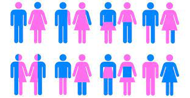

Salud y Bienestar
La salud sexual es un estado de bienestar físico, mental y social en relación con la sexualidad. Requiere un enfoque positivo y respetuoso de la sexualidad y de las relaciones sexuales, así como la posibilidad de tener experiencias sexuales placenteras y seguras, libres de toda coacción, discriminación y violencia.
La salud reproductiva implica la posibilidad de tener una sexualidad satisfactoria y segura, así como la libertad de tener hijos si y cuando se desea.
La Organización Mundial de la Salud, en su publicación Journal Paper promueve con urgencia el aborto legal y seguro como uno de sus derechos reproductivos y derecho fundamental de las mujeres, independientemente de donde vivan. El aborto inseguro se considera una pandemia silenciosa.

En méxico:
En México se cuenta con la Constitución Política de los Estados Unidos Mexicanos, la Ley General de Población, la Ley General de Salud, la Ley Federal para Prevenir y Eliminar la Discriminación, la Ley General para la Igualdad entre Mujeres y Hombres, el Programa Nacional para la Igualdad de Oportunidades y No Discriminación Contra las Mujeres 2013-2018, el Programa Sectorial de Salud 2013-2018, el Programa Planificación Familiar y Anticoncepción 2013-2018 y la Estrategia Nacional para Prevención del Embarazo en Adolescentes, que respaldan las acciones de planificación familiar, anticoncepción y salud reproductiva. Reconociendo que contamos con instrumentos normativos internacionales y nacionales que exhortan al Estado y a las instituciones respetar irrestrictamente los derechos reproductivos, es importante que conozcamos diversas formas de protección como es el uso de métodos anticonceptivos.
Objetivos de la salud sexual
El objetivo de los servicios de salud sexual y reproductiva es reducir la morbilidad y mortalidad materna mediante el aumento de disponibilidad de servicios de calidad y el acceso a los mismos.
La aceptación y el acceso a los servicios mejoran si son gratuitos, sensibles a la cultura local y se ofrecen junto a mensajes de promoción de la salud, involucrando a la comunidad en la toma de decisiones. Asimismo, es importante enfatizar la responsabilidad compartida con los hombres y promocionar su participación en la salud sexual y reproductiva, así como introducir servicios adaptados a las adolescentes ya que tienen necesidades médicas específicas en este ámbito.